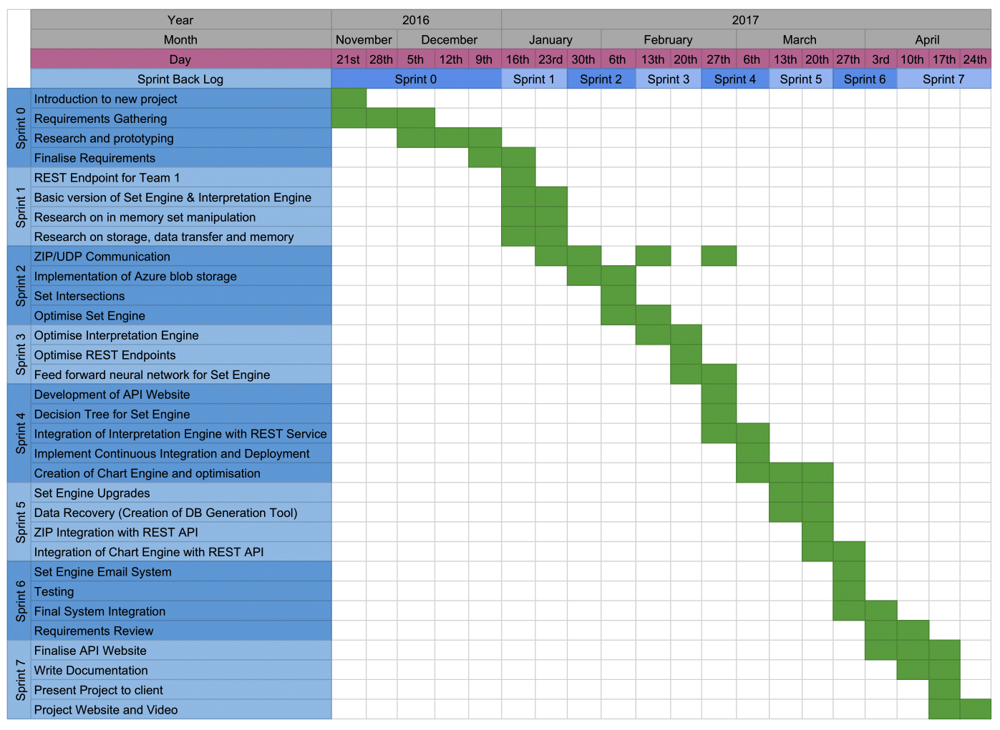

User Manual
Click here for the user manualSystem Manual
Click here for the system manualFeedback From Client
We met the client and project mentor James Randall on April 24th with Team 1 to show him the final project. The client was happy to see that we took many approaches and was particularly impressed with the Set Engine being able to produce multiple different sets for the database. He was also impressed with the speed of the REST API.
Gantt Chart
Please note that the start date is on November 21st as the client switched our team to a new project and so no data is available before this date that is relevant the project.
Bi-weekly Reports
Bi-weekly Report 1, OCT 16: Research the project and relevant technologies that we will
potentially use.
Browser Report 1
Bi-weekly Report 2, OCT 30: Gather more information on the nature and requirements. Meet
people from Capita.
Browser Report 2
Bi-weekly Report 3, NOV 16: Done research into Natural Language Processing. Setting up SIMS.
Browser Report 3
Bi-weekly Report 4, NOV 27: Set up REST endpoints for Team 1 and create database connectors
which connect to an Azure SQL database.
Browser Report 4
Bi-weekly Report 5, DEC 11: Update the website.
Browser Report 5
Bi-weekly Report 6, JAN 29: Prototyping new ideas and test.
Browser Report 6
Bi-weekly Report 7, FEB 22: Improvements in Set Engine, the REST service and storing of the
sets.
Browser Report 7
Bi-weekly Report 8, MAR 4: Fix the REST endpoints and integrate the Interpretation Engine.
Browser Report 8
Bi-weekly Report 9, MAR 11: Upgrade the Set Engine with decision tree. Create a new API
website.
Browser Report 9
Bi-weekly Report 10,MAR 24: Improve Blob storage system, chart engine.
Browser Report 10
Meeting Minutes
Meeting 1, OCT 6: The team met up to discuss the project and any initial research done regarding Capita and the SIMS software package, as well as any relevant Microsoft technologies that we will potentially be using during the project.
Meeting 2, OCT 11: We further explored possible technologies we can use, and having received some more detail on what the project will be about, started brainstorming about potential uses of the data Capita has access to.
Meeting 3, OCT 12: Meeting with Steven Law from Capita. We were given some more information on the nature of the project, and a few more contacts to get in touch with in terms of the technical aspects of the project.
Meeting 4, OCT 19: Meeting with Scott Bell, from Capita. This was a meeting with both our team and team 1. We were given installation files for the SIMS software and sample databases to go with it. Scott also gave us more insight into what Capita does, and what they aspire to do with the data extracted from the SIMS databases currently held at the individual schools.
Meeting 5, OCT 19: This was a meeting with the academic supervisor for our team project, Dr Harry Strange. We gave him updates on our progress and research so far, and we were given some valuable advice on the way forward. Since Dr Strange's field is Machine Learning, he also gave us some advice on how to tackle any Machine Learning aspects of the project which may arise.
Meeting 6, OCT 20: Following the meetings on the 19th of October, our team had a brief meeting to discuss the new information we got and to assign roles for the current work we have to do. We started to do research on the Azure Machine Learning
Meeting 7, OCT 24: This was a meeting for us to bring each other up to date with our progress with the tasks we set out to complete. We also helped each other finalize the installation of SIMS and get the hang of how to query the database to start seeing some data and playing around with some ideas.
Meeting 8, OCT 28: We had a quick meeting after our first scenario week lecture. We discussed that we would be researching technologies while Junwen attempted to set up SIMS, Nathan doing research into NLP and Lambros helping out with both.
Meeting 9, NOV 3: During this meeting with met with Scott to help us resolve our problems with the SIMS setup. Scott gave some hints and pointers to set us in the right direction. We attempted to reinstall SIMS but ran into more problems with the set up.
Meeting 10, NOV 8: We briefly met to fill each other in regarding our individual research. Junwen was set to do work on the website while Nathan and Lambros continue with research into NLP. We also arranged a Skype meeting the following week with Scott and a member from SIMS service desk to help install SIMS onto our laptops.
Meeting 11, NOV 16: We had a meeting with our TA to discuss our research and progress. He suggested we implement a minimum viable product by December. We were informed that the code had to be delivered by December so we made a command line application where users could automatically generate questions from a decision tree that would in turn map to a SQL query. This command line application would eventually be replaced with the web-app that will be deployed on Azure.
Meeting 12, NOV 17: We help a Skype meeting with Scott and a member from SIMS service desk to install SIMS onto our windows machine. We ran out of time to install SIMS so we have arranged another Skype session with Scott next Monday afternoon to install SIMS.
Meeting 13, NOV 21: This was our final skype meeting with Scott Bell. He informed us that he would no longer be mentoring our project, but continued to try and help us with setting up a SIMS DB on our VMs.
Meeting 14, NOV 22: Dr Strange confirmed that our project had been reassigned and that we would now be working on the backend engine that would send data to Team 1's visualisation engine. We organised a meeting with James to see what we would need to do and what questions we would have to ask him.
Meeting 15, NOV 24: During this meeting with James Randall, we were given some more details regarding our new project. We discussed ideas, possible approaches and requirements for the project. We also discussed how this new project would tie in with Team 1's project on visualisation.
Meeting 16, NOV 25: This was a relatively short meeting with Dr Strange to bring him up to speed with what we had discussed the previous day with James Randall.
Meeting 17, NOV 29: We met with our TA and showed him the work that we did during the week. Nathan showed in the REST endpoints that Team 1 would communicate with, Lambros showed the Azure Machine learning studio and Junwen had worked on the website. We agreed to continue our work during the next week.
Meeting 18, DEC 6: In this lab session we presented our website to our Teaching Assistant and showed some of the initial prototyping steps and experiments. We also helped Team 1 use the REST API that we created.
Meeting 19, DEC 13: Nathan met with Bethany to show her how to use the REST End point and also handed her a Javascript file with functions that can be called to call GET Requests from the REST Endpoints. We will need to meet with members from Team 1 to cement how the REST Endpoints will function and what parameters they would like us to call.
Meeting 20, DEC 14: Meeting with Dr Strange. This was a meeting with both Teams 1 & 2, where we discussed our progress. The main focus of the meeting, though, was the issue of getting more information from the client regarding the project. We have yet to receive access to data, or a working copy of either SIMS or the Discover add-on, access which will surely prove very beneficial and helpful for the project.
Meeting 21, JAN 12:This meeting with the client and Team 1 was a very productive one. James explained his thoughts on the project and his ideas regarding the solutions to the problems at hand. We discussed the overall design of the solution and the desired outcomes.
Meeting 22, JAN 26:We discussed the current solutions we are each working on, and talked about possible improvements for the next sprint. We also run a few experiments (regarding speed of set operations) and looked at and improved our overall system design, to help us think about the problem better.
Meeting 23, JAN 31:We evaluated the work the team did for the previous sprint and discussed the work that we needed to do for the first week of the sprint. This included demonstrating the current system we have in place and then finding areas of potential improvement with the teaching assistant
Meeting 24, FEB 15:We met to discuss and update our current progress on the tasks to be completed from the previous biweekly report. By this point we had successfully fixed the REST endpoints and configured the our system to read data from the Azure blob instead of a database. We also agreed on a date to meet Dr Strange to update him about on our progress.
Meeting 25, JAN 24:We met after the ending lecture for Scenario Week to discuss about the next steps for the System engineering project and catch up on the work completed over the past week. We concluded that we will need further optimise the set engine and meet with Team 1 to gain feedback on the REST endpoints.
Meeting 26, MAR 7:We met with Dr Strange to present a demo of the Set Engine and show the website for the new API. We also met with Team 1 to talk about their needs and we let them knowing about the data that they could retrieve with the API.
Meeting 27, MAR 14:During this meeting we discussed the current problems facing our team that included solving the problem of sending ZIP files, further optimisations to the chart engine and ensuring Team 1 are not affected by the changes occurring on the backend. We agreed that Lambros would fix the ZIP end point, Junwen to work on a report syllabus and Nathan to work on optimising the chart engine.
Meeting 28, MAR 21:We met with our TA to discuss completion of the project and remaining changes that needed to be made. We agreed that for the following week that Lambros would continue focusing on the REST API, Junwen on the website and Nathan on the remaining back end technologies.
Meeting 29, MAR 23:Team Skype meeting to integrate the optimised chart engine into the REST API. During the meeting we also made improvements to our library that reads from the blob. We made further improvements to the website and discussed possibilities on improving read times from the blob.